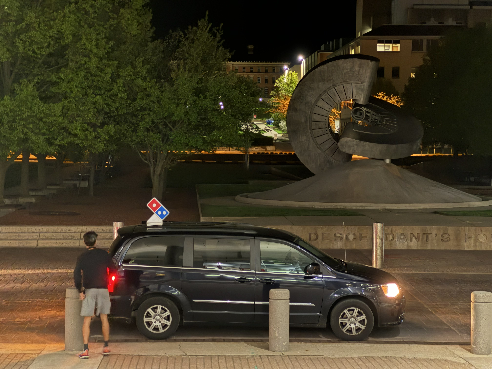

FPGA-Based eBike Controller - System Synthesis and Design
Developed a high performance, battery efficient, digital eBike controller using System Verilog, integrating PID-based motor drive logic, SPI communication interfaces, exponential averaging filters, inertial sensor fusion, and UART telemetry for real-time sensor data transmission.
Integrated pipeline stages and synthesis optimizations to meet a 400 MHz clock requirement, while achieving a 0.3ns setup slack margin. Reduced synthesized hardware area from 20k μm² to 13k μm² through logic and synthesis script optimizations.
Designed testbenches using constrained random verification, and compiled it onto an FPGA mounted on a bike to demonstrate real-world functionality.
First picture is when our synthesized scripts passed our post synthesis tests for the first time (at 2am). The video is our working synthesized implementation on a FPGA testbench.
Quantum Computing Error Mitigation using Graph Neural Networks - System Architecture for Quantum Computers
Designed and implemented a Graph Neural Network model with JAX trained on a diverse dataset of over 6,800 quantum circuits on Google TPUs. The dataset comprises 1,800 fuzzed MQT benchmark quantum circuits and 5,000 random QAOA quantum circuits.
This model achieved a 267% error reduction on structurally different quantum circuits compared to the training set, demonstrating strong generalization capabilities across various quantum computing architectures.
Paper publication currently in process, showcasing novel approaches to quantum error mitigation through machine learning.
First picture shows a histogram of the errors of different simulated quantum circuits. Green is ours, red is uncorrected. Ideally everything is centered at 0. The second image is a scatterplot of the errors - the line y=x represents the true outcome of the simulated circuit without noise. Even after adding noise, our corrected values match this expectation very well.
Multithreaded Kernel Scheduler - Operating Systems
Implemented a stride scheduler in C with the xv6 kernel to address CPU allocation fairness challenges between I/O-heavy and CPU-intensive processes using ticket-based priority management.
Utilized semaphores for thread-safe shared resource protection and developed custom system calls enabling dynamic ticket allocation adjustments during runtime.
Achieved balanced process execution where I/O-heavy processes maintained quick responsiveness while preventing CPU-bound process starvation, demonstrating advanced kernel-level scheduling algorithms and concurrent programming techniques.
Verilog Guitar Tuner on an FPGA - Digital System Fundamentals

Designed and implemented a real-time guitar tuner on DE2-115 FPGA using Verilog, integrating FSM-based frequency detection, pushbutton synchronizers, and subtraction circuits for accurate string pitch analysis.
Applied strategic pipelining techniques by inserting pipeline flip-flops at critical path bottlenecks, breaking combinational logic into optimized stages to maximize throughput. Reduced maximum combinational delay from 17ns to 9ns and increased operating frequency from 50MHz to 83.33MHz (67% improvement).
Testing our guitar tuner - which was written in Verilog - on an FPGA board. Got it working at 4am.
The first image is our multiplier function with a pipeline register to allow for higher frequencies and throughput.
The second image is one of my friends picking up Dominoes pizza at 2am :]
Least Squares Classifier Training - Matrix Methods in Machine Learning
Solved for gradients and wrote the gradient descent function from scratch for a binary least squares classifier, implementing custom mathematical derivations and optimization algorithms.
Developed the entire training pipeline including cost function computation, gradient calculation, and parameter updates without using pre-built machine learning libraries.
First image was when I forgot a negative sign which I found funny. Second image is the fully trained finished result.
LED Controller - Introduction to Electrical Engineering
Used a potentiometer, button, and switch to control flashing frequency and color meshing in this simple circuit.
Used an oscilloscope to measure delay between state transitions (button getting pressed and the base color changing).
Acoustic Keylogger for Password Thieving
My goal with this project was to figure out the security implications of acoustic keylogging — a technique where keystrokes are identified through the sound they produce. Keyboards emit unique acoustic signatures that can be captured and analyzed using frequency, timing, and amplitude analyses. By employing these methods, subtle variations in key sounds can be used to predict keystrokes.
This project is centered around the development and application of a machine learning model using Bi-Long Short Term Memory (Bi-LSTM) and Convolutional Neural Networks (CNNs) for detecting violence in videos. As the internet becomes saturated with video content, there's a critical need for automated systems to identify violent content for reasons such as content moderation on social platforms, public safety, and mental health protection. The Bi-LSTM CNN model leverages CNNs for extracting spatial features and Bi-LSTM for capturing temporal dynamics, providing a robust framework for analyzing video sequences. The model, trained on the Real Life Violence Situations Dataset, achieved a validation accuracy of approximately 93.6%.
I built this app 2 years ago as a way to translate ASL to text without the need for expensive sensors - the only requirement is a camera. I used CNN models and Google's Mediapipe models to decipher what gestures a person is signing.
I also proceeded to file a patent for this technology as it enabled real-time translations that were very accurate.
The patent I filed addressed various challenges, starting with high fidelity gesture recognition, by removing the background image clutter in a live video stream. The gesture was then passed to an engine that created a wireframe based on the hand's landmark detection. This wireframe was then sent to a pre-trained YOLOv3 AI model, returning the inferred gesture as text. The entire process of recognizing gestures took under 32ms with an accuracy of over 99.71%.
This whole website was written in html, css, and javascript. (Image formatting took way too long :])
Choosing not to use a website authoring tool allowed me to gain hands-on experience with the fundamentals of HTML, CSS, JavaScript, and other aspects of the front-end software stack.